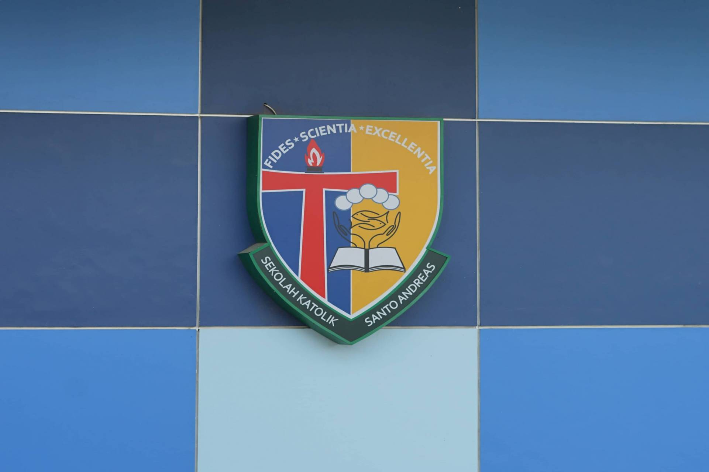
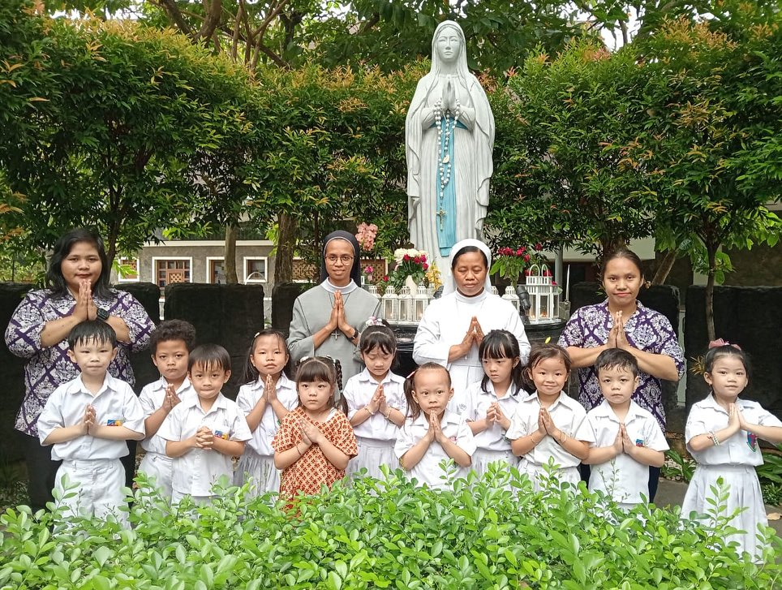
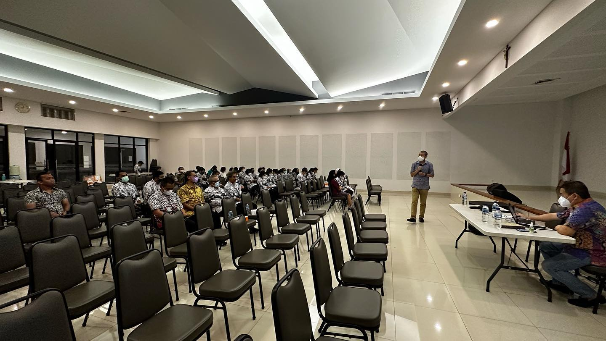
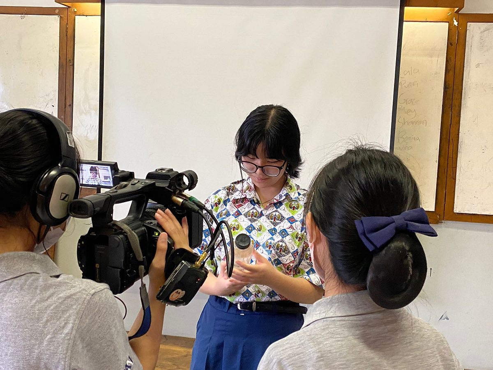
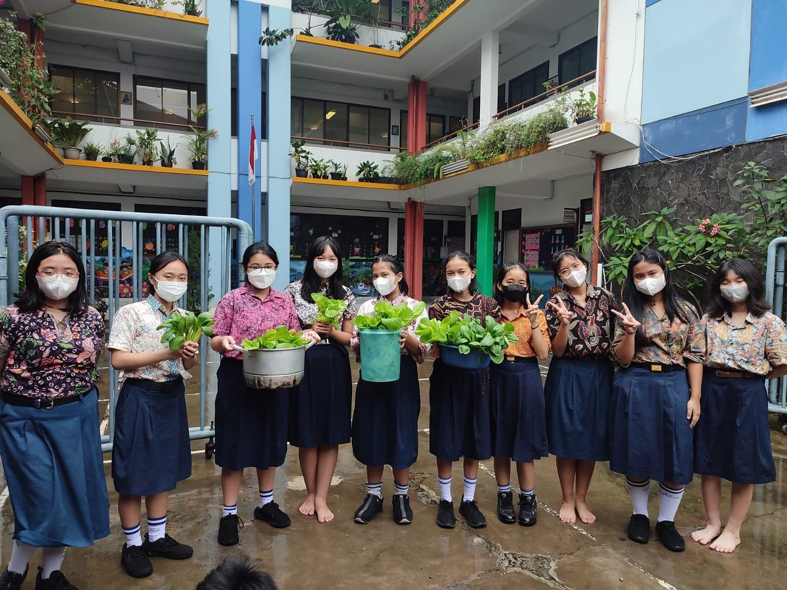
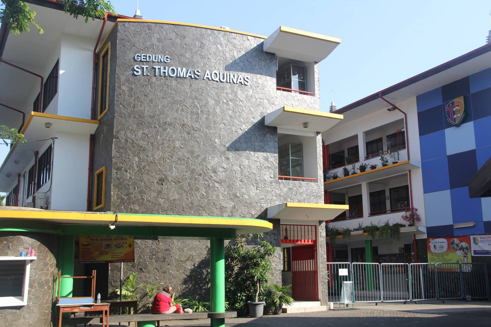
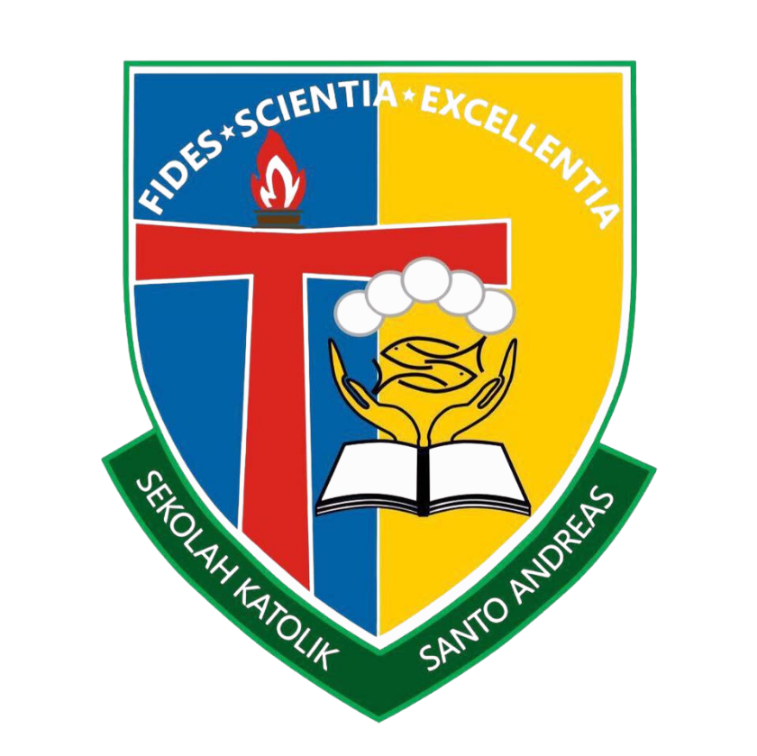

Gembira · Cerdas · Peduli
Tentang Kami
Lebih dari tiga dekade membentuk generasi unggul di Jakarta Barat.
Orang Tua Percaya
Guru Bersertifikat
Alumni
Tahun Berdiri
Jenjang Pendidikan
Pondasi pertama perjalanan belajar si kecil — penuh eksplorasi, bermain, dan kasih sayang. Kami membentuk karakter, rasa ingin tahu, dan kecintaan belajar sejak dini.
Enam tahun membangun ilmu, budi pekerti, dan semangat juang. Siswa dididik untuk unggul akademis sekaligus tumbuh menjadi pribadi yang peduli dan berkarakter Kristiani.
Program SMP kami dirancang untuk mempersiapkan siswa menghadapi tantangan akademik dan kehidupan nyata.
Mengapa Memilih Kami
Kami hadir dengan pendekatan yang berbeda — karena setiap anak berhak mendapat yang terbaik.
Bukan hanya pelajaran agama. Kami menanamkan kasih, kejujuran, dan kepedulian ke dalam setiap aktivitas harian di sekolah.
Karakter & RohaniTim pengajar kami tersertifikasi, terus berkembang dan berpengalaman dalam menciptakan murid-murid yang luar biasa.
Tenaga PendidikLab sains, lab komputer, lapangan olahraga, kolam renang, kantin, dan lainnya. Semua tersedia agar eksplorasi anak tak pernah terbatas.
FasilitasDari olimpiade sains hingga kompetisi bahasa. Siswa kami konsisten meraih penghargaan di berbagai tingkat.
PrestasiAkademik, emosional, sosial, dan spiritual. Kami mendidik anak secara menyeluruh agar tumbuh menjadi pribadi yang utuh dan seimbang.
Gembira · Cerdas · PeduliLebih dari 1.000 orang tua telah mempercayakan buah hati mereka kepada kami. Bergabunglah dengan keluarga besar Santo Andreas.
KomunitasSiap menjadi bagian dari keluarga kami?
Daftar SekarangKabar Terbaru
Ikuti setiap momen, pencapaian, dan cerita inspiratif dari keluarga besar Santo Andreas.
Pertanyaan Umum
Kami kumpulkan pertanyaan yang paling sering ditanyakan oleh orang tua dan calon siswa baru.
Pendaftaran siswa baru umumnya dibuka pada bulan Januari – Maret setiap tahunnya untuk tahun ajaran berikutnya. Kami menyarankan Anda mendaftar lebih awal karena kuota terbatas. Pantau terus halaman Pendaftaran kami atau ikuti media sosial @sstandreas untuk pengumuman resmi.
Sekolah Santo Andreas menyelenggarakan pendidikan dari jenjang Nursery & Playground, TK, SD, hingga SMP — sehingga anak Anda dapat menempuh pendidikan dari usia dini hingga remaja dalam satu lingkungan yang konsisten dan penuh kasih.
Tidak. Meskipun Santo Andreas adalah sekolah berlatar belakang Katolik, kami terbuka bagi siswa dari berbagai latar belakang agama dan kepercayaan. Kami percaya bahwa nilai-nilai seperti kasih, kejujuran, dan kepedulian bersifat universal dan relevan bagi semua.
Kami menggunakan Kurikulum Merdeka yang ditetapkan oleh Kemendikbud, dipadukan dengan pendekatan holistik berbasis nilai-nilai Kristiani. Selain akademik, kami sangat menekankan pengembangan karakter, kreativitas, dan kecerdasan emosional siswa.
Santo Andreas dilengkapi dengan berbagai fasilitas modern, antara lain: laboratorium sains, laboratorium komputer, perpustakaan, lapangan olahraga, kolam renang TK, ruang osis, kantin, dan area bermain yang aman untuk siswa TK dan SD.
Iya. Kami memiliki beragam pilihan ekstrakurikuler mencakup bidang olahraga (basket, futsal, taekwondo), seni (menggambar, paduan suara, fotografi, tari modern, tari tradisional, musik), hingga akademik (Science club, English club). Setiap siswa didorong untuk menemukan dan mengembangkan bakatnya.
Anda dapat menghubungi kami melalui telepon di 021 – 580 4058 pada jam operasional Senin–Jumat pukul 06.00–15.00. Kami juga aktif di media sosial Instagram dan Facebook @sstandreas, atau kunjungi langsung kami di Jl. Komplek Green Garden, Kedoya Selatan, Jakarta Barat.
Masih punya pertanyaan lain?
Hubungi Kami
Orang Tua Murid TK
Fasilitas sangat baik, lingkungan tidak terkontaminasi kebisingan, dan tim guru yang luar biasa supportif

Orang Tua Murid SD
Salah satu sekolah Katolik terbaik di Jakarta Barat. Guru-gurunya kompeten, penuh dedikasi, dan sesuai dengan kurikulum yang modern
Alumni SMP 2021
Pengalamanku menempuh pendidikan selama kurang lebih dua belas tahun sungguh menyenangkan dan begitu berkesan
Orang Tua Murid TK
Nilai-nilai keagamaan sangat ditanamkan oleh para guru dan suster pendamping!
Orang Tua Murid KB
Perkembangan anak saya sangat baik dalam bidang kognitif, emosional, dan sosial — berkat tim guru yang kompeten dan penuh kasih